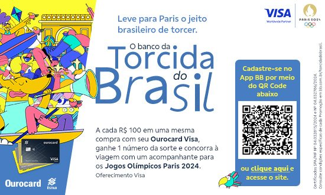
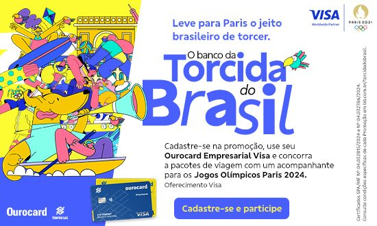
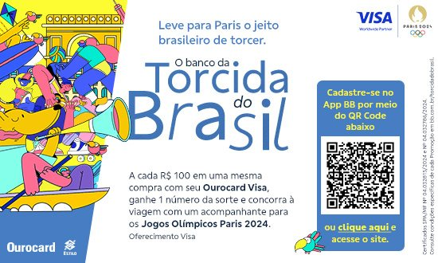
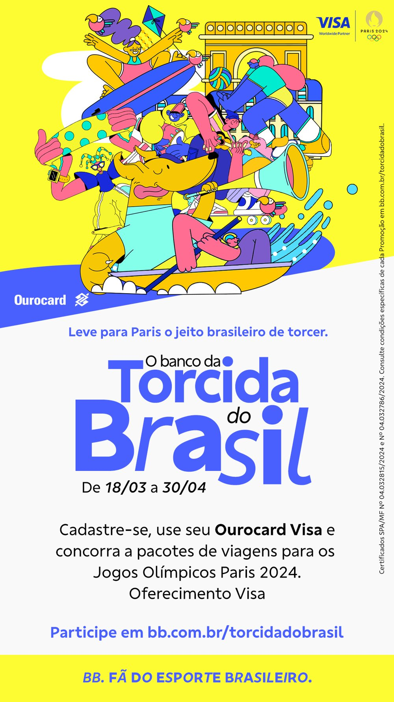

The pieces
One campaign, every format.
Banners, feed posts, stories, WhatsApp cards — each one adapted for a different audience line — retail, premium, consumer and business — while keeping the party intact. Click a deck to shuffle through.




Banners 550×330×4
Consumer · Business · Premium · Retail · QR


Feed 1:1×2
Instagram · WhatsApp


Stories 9:16×2
Premium · WhatsApp
↻ click a pile — there's always another piece underneath